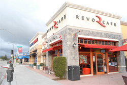

Welcome
Ever have trouble studying at home? Can't find a comfortable location to study? We're here to help you focus and find the perfect location based off of your needs! StudyHall has a variety of locations that you can search and find near you. Check our locations to find exactly what you are looking for!- Live Tweets -
Follow @studyhallroomWebsite is currently under construction! Follow us for updates!
— studyhallroom (@studyhallroom) May 11, 2016
Check out our new favorite locations:
Revo Cafe
Small cafe located in Los Angeles, CA right next to Glendale. Great for group studying and crepe eating.Address:
3134 Glendale Blvd.,
Los Angeles, CA 90039
Zephyr's
Zephyr's is a spacious hookah lounge that most customers go to smoke hookah and do homework.Address:
3134 Glendale Blvd.,
Los Angeles, CA 90039
Bourgeois Pig
Bourgies Pig is an indie hole-in-the wall coffee shop, it is best known for its forest cave and great iced coffee.Address:
3134 Glendale Blvd.,
Los Angeles, CA 90039
Spotlight of the Month: Revo Cafe
 Small cafe located in Los Angeles, CA right next to Glendale. Great for group studying and crepe eating. They have monthly event with live music and great for art lovers! Location is great for big or small groups. Revo Cafe is owned by Harut and is best known for their Revo latte which was recently taken off the menu, but still being served. Harut hopes to add more events in the summer.Click here to view why Revo is so great>>